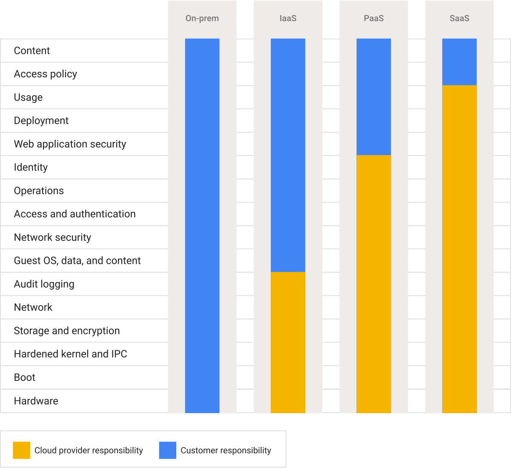

Draw the responsibility line for each service
AWS describes security as shared responsibility: it operates the cloud infrastructure, while customers still control many aspects of what they deploy and configure. The exact split varies by service. A managed database reduces patching work, but it does not decide who can read your data, whether backups meet your recovery goal, or whether application code exposes secrets.


Start with the workload, not a service catalogue. Define the data classification, latency, availability, recovery-time and cost targets before choosing managed components.
Walk a small deployment end to end
For a document-processing service on AWS, decide where files land, which identity can read them, where extracted records live, and how jobs resume after failure. Encrypt and scope access; log actions without leaking document content. Test restore from a backup, not only backup creation. Set cost alerts around storage, model calls and retries.
A new worker deployment raises processing errors. The team can see queue depth and error rate, roll back the worker, and replay only jobs with safe idempotency keys. The provider keeps the underlying service available; the team owns this application recovery.
Review the whole workload
The AWS Well-Architected Framework frames operational excellence, security, reliability, performance, cost and sustainability as tradeoffs to revisit. A serverless component may simplify capacity management while making per-request costs or time limits important. A container may give more control at the price of more operations. Choose the smallest arrangement that meets measured requirements.
Read the original sources
- AWS shared responsibilityHow responsibility changes by service and configuration.
- AWS Well-Architected FrameworkSix-pillar workload review and architectural tradeoffs.
- Google Cloud · Shared responsibilitiesGoogle Cloud architecture figure; converted from SVG to PNG.